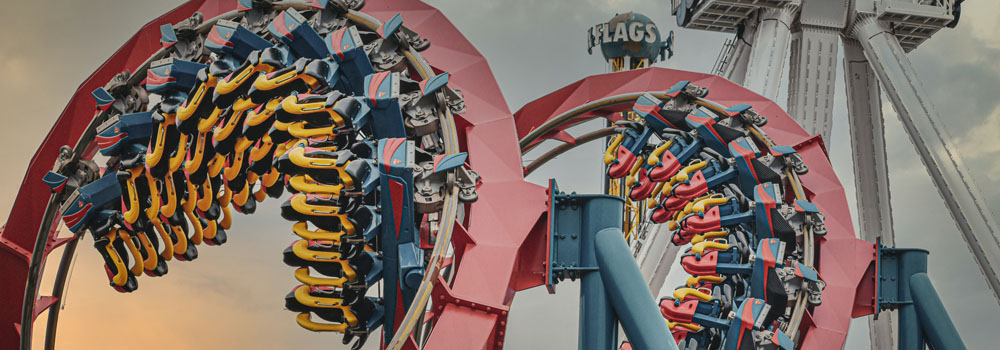

Six Flags Fiesta Texas is one of the most popular theme parks in all of texas! With rides, games, events, shows, looney characters, superhero themed coasters, and a massive water park to boot, six flags is the perfect in city getaway for the whole family!
Tiket prices are typically 45$ per person, but be sure to look out for great deals!